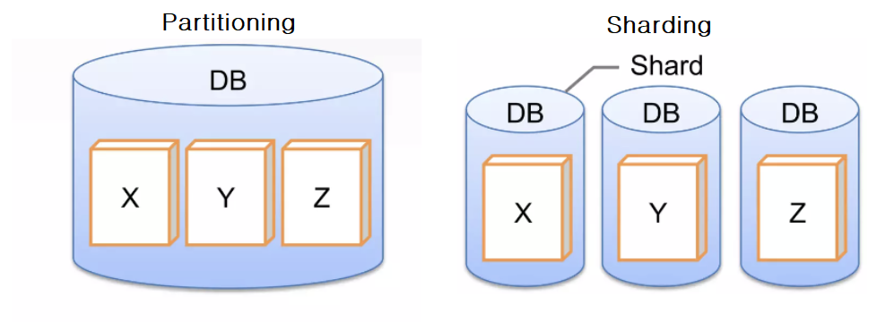
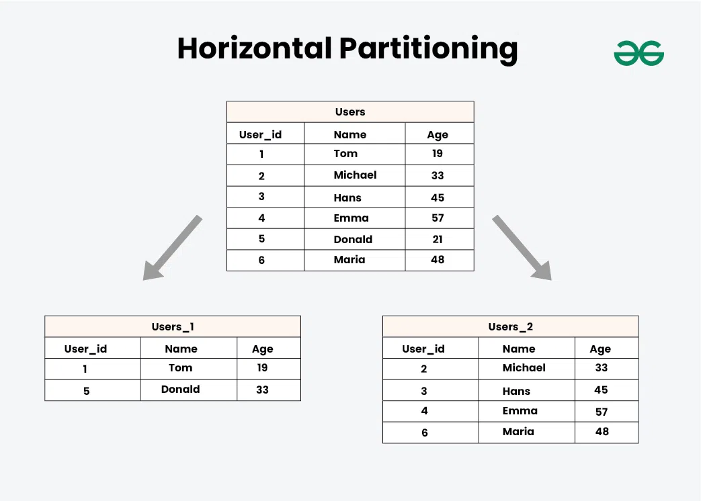
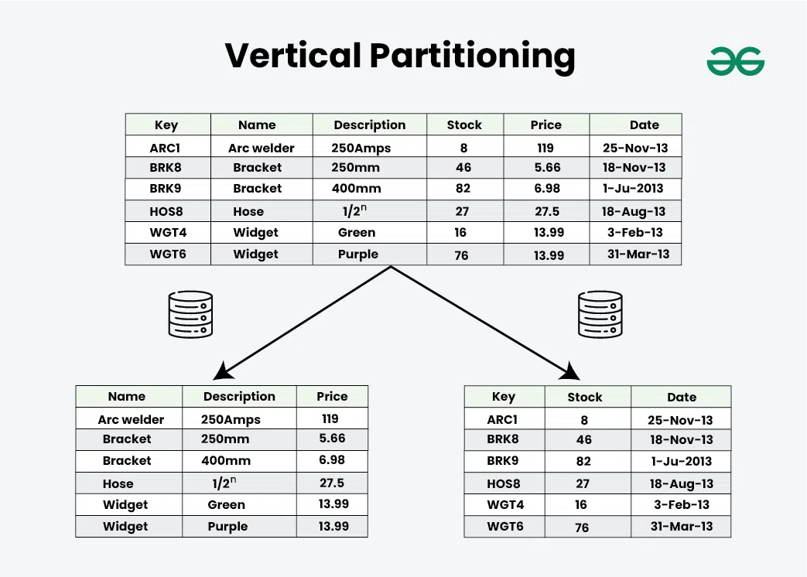
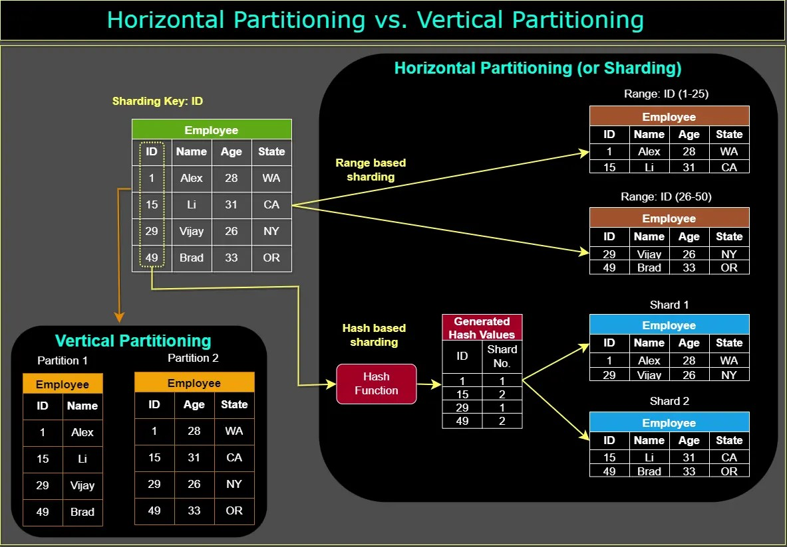
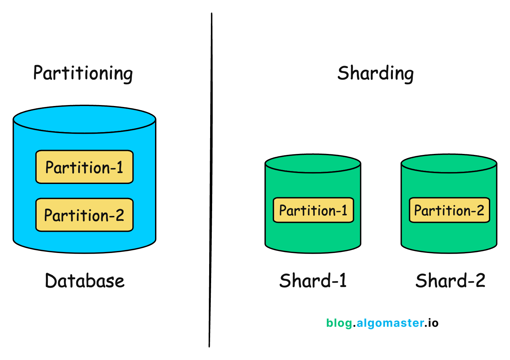

System Design Mastery
Master scalable systems with premium insights
🧩 Partitioning vs Sharding — Split Within vs Split Across Servers
🔹 1️⃣ What is Partitioning?
Partitioning means splitting a large table into smaller pieces inside the same database server. The database still runs on one machine.
Example:
You have a big Orders table:
orders
Partition by year:
- orders_2022
- orders_2023
- orders_2024
All partitions are still stored on the same DB server.

📊 Partitioning: split within the same database server
🔹 2️⃣ What is Sharding?
Sharding means splitting data across multiple database servers. Each shard runs on a different machine and helps you scale horizontally.
Example
You have a Users table with 100 million users:
- Server A → users 1–10M
- Server B → users 10M–20M
- Server C → users 20M–30M
Each shard is on a different machine.
Check this for types of sharding:
🧠 Why Do They Exist?
Partitioning solves:
- ⚡ Query performance
- 🗂️ Large table optimization
Sharding solves:
- 📈 Massive scale
- ✍️ High write throughput
- 💾 Storage limits
💥 What breaks without them?
Without partitioning:
- Large tables become slow
- Full table scans become expensive
Without sharding:
- Single DB becomes a bottleneck
- Cannot scale beyond hardware limits
- High write latency
🕒 When to Use Partitioning?
✅ When:
- Table grows very large
- Queries filter by date or category
- Single DB is still sufficient
Example:
- Logs table
- Orders by year
🕒 When to Use Sharding?
✅ When:
- Millions of users
- Single DB cannot handle load
- Need horizontal scaling
- High write traffic
Example:
- Social media users
- Payment systems
- Large SaaS platforms
⚠️ One Common Mistake
🚨 Thinking partitioning = scaling solution.
Partitioning improves performance, but it is still limited by single machine capacity. Only sharding truly scales horizontally.
🛒 Real App Example (E-commerce)
Stage 1
Single DB → Add partitioning for orders by year
Stage 2
Traffic increases → Shard users across multiple DB servers
- Partitioning: Posts table partitioned by date
- Sharding: Users distributed across many DB servers
Types of partitioning
1️⃣ Horizontal Partitioning (Row-wise Split)
Split the table by rows. Each partition contains the same columns, but different rows.
Example
Users table: user_id, name, email, city
Split like:
- Partition 1 → user_id 1–1000
- Partition 2 → user_id 1001–2000

📊 Horizontal partitioning: same columns, different rows
Used when:
- Table has millions of rows
- Range queries are common
- You want faster filtering
2️⃣ Vertical Partitioning (Column-wise Split)
Split the table by columns. Each partition contains different columns.
Example
Original: | user_id | name | email | bio | profile_photo |
Split like:
- Table 1: | user_id | name | email |
- Table 2: | user_id | bio | profile_photo |

📊 Vertical partitioning: different columns, related by key
Used when:
- Some columns are rarely used
- Some columns are large (BLOB, text)
- Want faster access to common fields
Comparison

📊 Horizontal vs Vertical partitioning overview
🧠 Important Insight
Partitioning can be horizontal (rows) or vertical (columns). Sharding is usually horizontal partitioning across servers.
👉 Sharding = Distributed partitioning
🔍 Difference between partitioning vs sharding

📊 Partitioning vs Sharding key differences
Important Insight 🔥
Sharding is basically horizontal partitioning across multiple servers. So technically: all sharding is partitioning, but not all partitioning is sharding.
🎯 Summary
Partitioning splits data within a single database for performance optimization, while sharding distributes data across multiple databases for horizontal scalability.